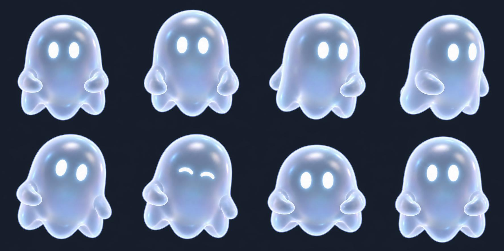

«Ты ещё тут?»
Черновой покадровый цикл Astral: 32 уникальных рисунка imagegen, 4 секунды, 8 новых поз/с. Таймлайн — 96 тактов при 24 fps с удержанием рисунков. Это проба для ревью; плавность 24 уникальных рисунка/с ещё не достигнута.
Тёмный фон · 280 px
Светлый фон · 280 px
26 px
64 px
Реальные рисунки меняются: лапки, волны, поворот, наклон и одно короткое моргание. CSS не деформирует персонажа.Последний такт повторяет точный рисунок начала. Это замыкает позу, но не гарантирует незаметный стык: различия соседних сгенерированных кадров и света требуют доработки. В приложение цикл не подключён.
WebP с прозрачностью · GIF на светлом фоне · Атлас PNG · Метаданные · Отчёт
Первый лист ключевых поз
